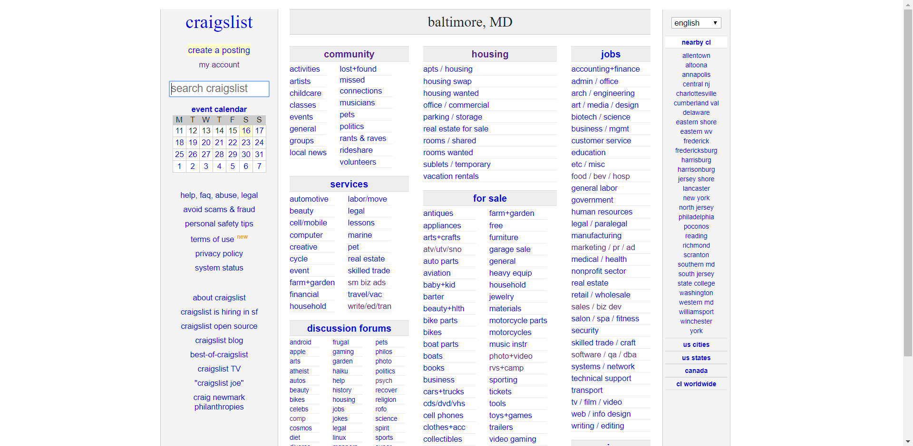
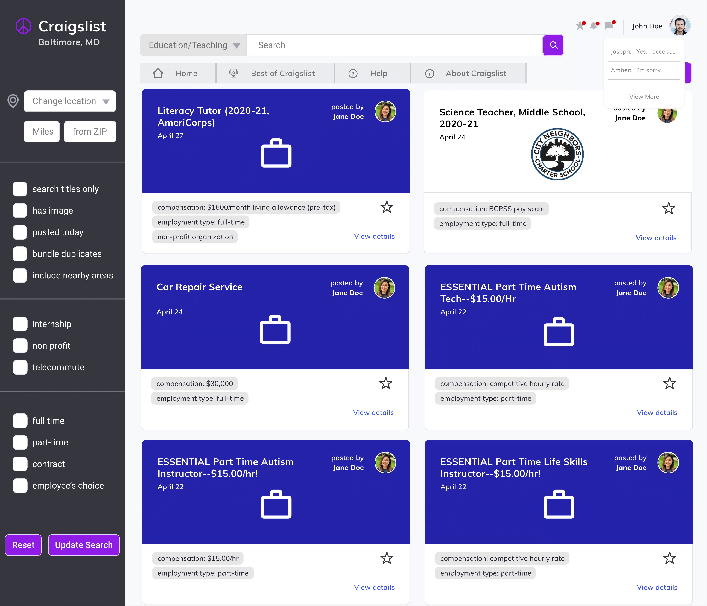
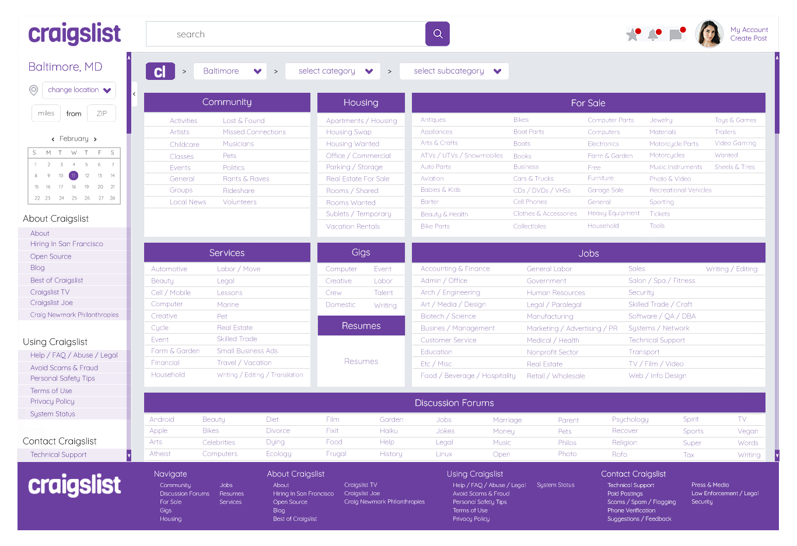
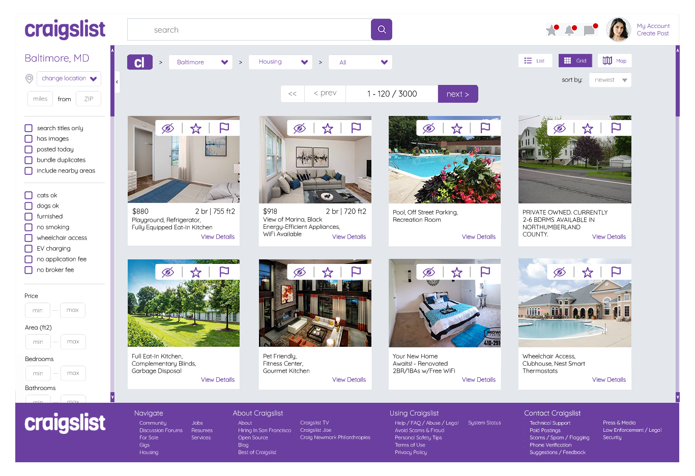
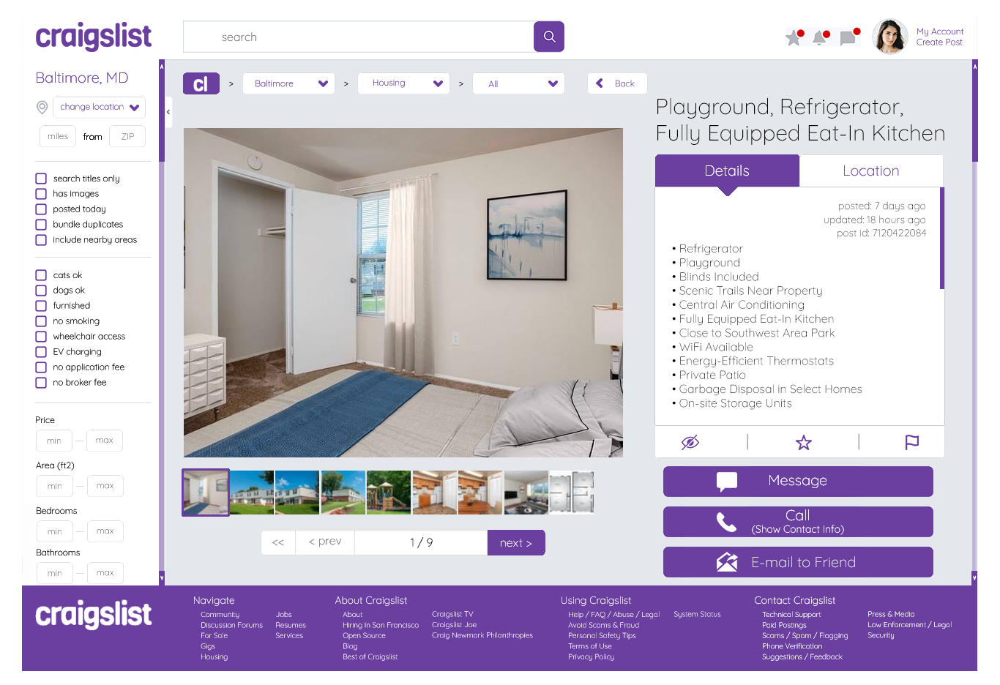

CRAIGSLIST RE-DESIGN
(CONCEPT)
BEFORE


AFTER
  Despite the deficient, out-dated user interface, Craigslist serves millions of users daily. It is mostly an advertisement site in which anyone may post an ad for a service or product they are providing or selling. There are certainly other things users do on Craigslist such as post in forums or look up events in the events calendar. However, most users connect with each other for monetary reasons.
Usability
Craigslist should have operational simplicity. The usability goals the re-design should strive to achieve include learnability, navigability, and efficiency.
New and returning users should be able to understand how to use Craigslist at first glance. Good learnability is directly relevant to usability. The less time and effort users have to invest in learning how to use a product, the more time they can spend on meeting their goals. Additionally, good learnability makes users feel confident in their abilities.
For our re-design, we considered different aspects of learnability. One aspect is first-use learnability, which is important for users who plan to use the site only once. Another aspect is the steepness of the learning curve, which is important for users who want to feel a sense of progression with the interaction and get better at using a product. Lastly, there is the efficiency of the interactions, which is vital for users who will use the site frequently. Good learnability is the result of three things (which the original Craigslist site lacks): good information architecture in accordance with the mental model of a user, good navigation, and good individual web pages. The interface should attract more non-technical oriented people and young users that currently find the site puzzling. At the same time, the re-design should not detract Craigslist’s existing users.
In addition to learnability, there is concern for improving the navigability of the website. New and old users find it difficult to navigate through the text-heavy, disorganized website. Users are bombarded with large amounts of information, especially on the homepage. Navigability is essential for Craigslist because it is an umbrella of numerous subpages. Craigslist Baltimore is just one of the many subpages. The lack of consistent navigation and layout throughout the site easily makes users feel lost. Users should feel like they are in control, and to have confidence in finding ads.
Lastly, the Craigslist re-design focuses on efficiency and speed. The redesign has to be intuitive - users should be able to complete certain operations with ease without too much guesswork. Also, because users go to Craigslist for opportunities and good deals, the re-designed interface should provide efficiency in browsing through ads by making textual content less eye-straining. Because Craigslist is so firmly established and the community of users is so large, usability improvements may confuse regular visitors and make it more difficult for them to use the site. Thus, the new improvements we added to our re-design enhance Craigslist’s existing features rather than worsen their already deficient quality.
The theme that helps meet all those usability goals is familiarity. Looking across a wide base of websites, one will notice that there are often features that transfer from site to site. Things such as familiar icons and layouts act as interaction cues and allow users to immediately understand the very basic functions, meaning that we can learn the specific intricacies of a site quickly. Every action we want the user to take is comprehensible (i.e. the language that we use in fields, buttons and links should be clear and direct). Users should enjoy Craigslist Baltimore regardless of their experience (or lack of experience) with other job boards and e-commerce sites. If there are some unfamiliar features (which we tried to keep at a minimum), the style of the new interface should encourage users to test out the features.
User Experience
User experience goals are concerned with creating systems that enhance the user experience in terms of making it enjoyable, fun, helpful, motivating, and pleasurable. The user experience on Craigslist is far from pleasant with the site’s blank look. The site has not been heavily updated throughout the years, and they keep it like that for a reason; the site’s lack of aesthetics help make it memorable and instantly recognizable. The major user experience issues that stem from the site’s original design include safety and awareness. The re-esign should get rid of those issues.
One major thing that Craigslist lacks is credibility. Throughout the site, Craigslist warns users of possible scams and shows buttons and links for reporting scams. It is important for Craigslist to create some kind of trustworthy relationship with clients and new potential clients. Users should not feel afraid to find opportunities and resources. A modern re-design can increase awareness in users by bringing more visibility for the precautionary tips provided without making the site seem sketchy. Another huge benefit we aimed for was to deter possible scammers through a professional-looking site.
Last but not least, users should feel like they are aware of the latest updates. The most cumbersome feature of Craigslist is the lack of notifications on the user’s typical viewing page - outside the account page. Alerts should be visible because users want critical information to make informative decisions. They can be displayed clearly and succinctly at the top right corner of a sticky header. Keeping users informed keeps them coming back.